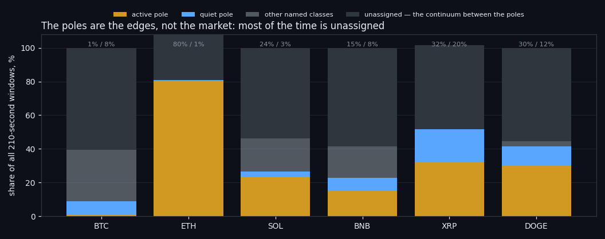
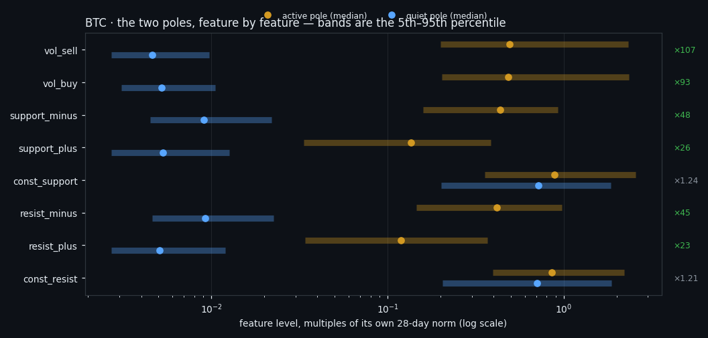
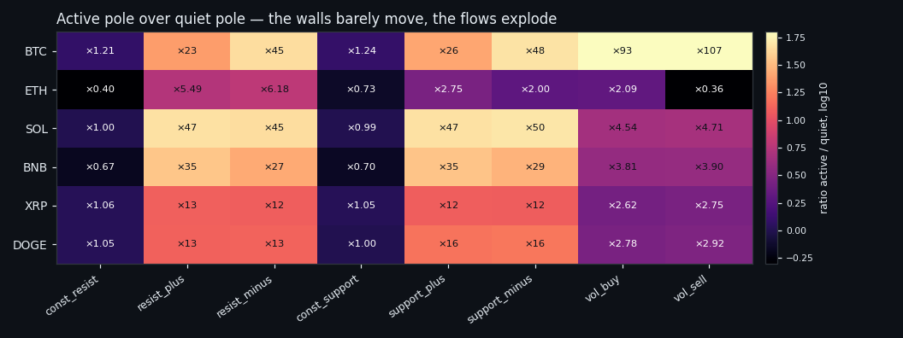

Two Poles of Market Activity, Found Without a Teacher on Six Coins
We cut 122–141 days of per-second order-book data on 6 coins into 164,342 windows of 210 seconds, showed a clustering pipeline nothing but the eight order-book features, and asked whether the market falls into natural states. It does — two poles of flow activity with a wide grey zone between them — and the same pipeline run on shuffled data produces nothing, which is what makes the answer worth reporting. The walls turn out to be irrelevant to the split, and the autoencoder we brought in to beat PCA lost to it.
Full walkthrough — streamed from YouTube.
① One question, and a deliberately blind input
Does the market fall apart into natural states? Not into the states we invented — into whatever the data itself insists on, if we take away every crutch.
So the input was made deliberately blind. One observation is a window of 210 seconds holding eight order-book features — the two resting walls, the four flows building and draining them, and the two executed volumes — each divided by its own 28-day norm so that a quiet coin and a loud coin are on the same scale. Price does not enter. Time of day does not enter. Neither does duration, or what happened in the neighbouring window. Windows are cut every 300 seconds, so no two of them share a single second, and the first 28 days of every coin are thrown away because the norm is not warm yet.
That leaves 164,342 windows across 6 coins and 122–141 days each. Everything below is what came back.
The chart already contains the least comfortable part of the answer. Two states do appear on almost every coin — an active pole and a quiet one — but they are the edges. On Bitcoin the active pole is 0.7% of all windows and the quiet one 8.3%, while 61% of the time sits in between, in a continuum that refuses to be a class. This is not a taxonomy of ten market regimes. It is one scale with two ends.

② Clustering always returns something — so we ran it on nothing
Hand a clustering algorithm pure noise and it will hand you back tidy clusters. That is not a risk to be mentioned in a footnote; it is the default outcome, and it is why most "market regimes" you read about are decoration.
So every number here is measured twice. Once on the data. Once on a null control: the same pipeline, the same code, the same parameters, run on a copy in which every cell (feature, second) has been shuffled between windows. Distributions survive, structure is destroyed. Whatever the pipeline reports there is what it manufactures out of nothing.
Stability itself is measured by rerunning the whole thing on 80% subsamples and asking how much two independent runs agree (adjusted Rand index, 1.0 = identical partitions, 0 = chance).
PCA scores 0.561–0.605 across the 6 coins. Its null control scores 0.000–0.008 — that is, essentially zero. The gap is +0.553–0.605, and the spread between six independent coins is in the second decimal place. On 5 of 6 coins the answer is the same k = 2.
That is the result: the split is not an artefact of the method, because the method given structureless data produces nothing at all.

③ The autoencoder was not needed
The obvious objection is that PCA is a linear rotation of axes and the market is not linear. So the identical pipeline was run with a convolutional autoencoder in place of PCA — eight features as eight channels, convolution along time only, trained on each coin, everything downstream unchanged.
On raw stability it ties: 0.541–0.583 against PCA's 0.561–0.605. On the number that decides the question, it does not. Its null control jumps to -0.005–0.339 — on some coins the network assembles a "stable" partition out of data whose structure has been destroyed, and the honest gap falls to +0.244. A method that finds order in shuffled noise is not one you want deciding what a market state is.
And it costs: 61–99 seconds per coin for PCA against 1,775–2,344 for the network — roughly **24× more compute for a worse guarantee**. We keep reporting this comparison because the reflex to reach for a network is strong and, in this line of work, usually wrong. A companion study took the same network apart in detail — eight ways to compress 210 seconds — and found the same thing from the inside: its stability is real, and so is the stability it produces from shuffled noise.
④ What actually separates the two poles
Now the interesting part. The two poles are not "high price movement" and "low price movement" — price was never shown to the model. So what is different about them?
Feature by feature, with the band covering the 5th to 95th percentile of each class, the answer on Bitcoin splits the eight features cleanly in two. 6 of them separate the poles completely — their bands do not overlap anywhere — and every one of those 6 measures something moving: liquidity arriving into and draining out of the two walls (×23 to ×48) and executed volume (×93 and ×107).
The two features that do not separate are exactly the two static ones. `const_resist` differs by ×1.21 between the poles and `const_support` by ×1.24 — that is, not at all — and their bands sit on top of each other. **The thickness of the wall does not define the state of the market.** A quiet market and an active one carry the same resting liquidity; what changes by two orders of magnitude is how much of it moves.
Read plainly: a market state is the movement of orders around the walls, not the size of the walls. That is the same asymmetry this project keeps arriving at from other directions — resting liquidity is scenery, moving liquidity is the signal.

⑤ Six coins, one answer — and one coin that argues
A finding on one coin is an anecdote. The same pipeline was therefore run independently on all 6, with no shared parameters beyond the recipe.
Two things repeat everywhere. The flows differ between the poles by **an order of magnitude or more on 5 of 6 coins** (BTC, SOL, BNB, XRP, DOGE) — ×12 at the weakest, ×50 at the strongest. And the walls barely move: across all 6 coins the active-pole-to-quiet-pole ratio of the two resting walls stays between ×0.40 and ×1.24 — at most a quarter thicker, on two coins actually thinner, never anything like the order of magnitude the flows show.
Complete separation — bands that never overlap — is stricter and is reached on 4 of 6 coins (BTC, SOL, BNB, DOGE). On the other two the poles are still ordered the same way, just not disjoint. That distinction matters for anyone who wants to use this: the shape of the answer is universal, the sharpness of it is not.
The clearest exception is worth stating plainly rather than hiding. On ETH the clustering split differently: k = 3 instead of 2, with the "active" class swallowing 80% of all windows and the quiet pole reduced to a sliver. When one class covers most of the data, the contrast between poles collapses — which is exactly what its row in the chart shows. ETH did not contradict the finding; its partition simply is not the same partition, and averaging it into a single headline number would have hidden that.

⑥ The strongest single piece of evidence
The clearest argument that the poles are real is not a metric at all. It is that two methods with nothing in common find the same ones.
Take only the windows where both engines — the linear rotation and the convolutional network — confidently assigned an extreme state. On 5 of 6 coins they agree on 99.9% or more of those windows; on ETH, the coin whose partition came out differently in the first place, agreement is 73%.
Two engines that share no assumptions, no loss function and no geometry are pointing at the same windows and calling them the same thing. That is harder to fake than any single stability score.
⑦ What this is not
Four limits, because a result without its boundaries is advertising.
It is not a full partition of the market. The named classes cover roughly 40–50% of the time. The rest — 61% on Bitcoin — is a continuum with no dense clumps in it. The honest statement is "two edges and a long middle", not "the market has N states".
It is a split by level, not by structure. What differs between the poles is how much flow there is, not who is winning: the internal balance of the eight features — which side of the book dominates — is nearly the same in both states. Order-book shape is not what the split is made of.
It says nothing about direction. Nothing here predicts up or down; the whole project's experience is that the order book forecasts size, not sign, and this study was not built to challenge that.
A stable split is not a tradeable one. These are states, not signals. Turning one into an entry rule means paying 0.30% per round trip, and that test belongs to a different study — one where the detector runs forward on windows it has never seen.
⑧ What we take from this
Three things survive from this study.
The market does have two ends of an activity scale, they are found without a teacher, they are found on 6 coins independently, and the pipeline that finds them produces nothing when the structure is removed. The distinguishing quantity is the flow of limit orders, not the resting size of the walls. And the fashionable engine lost to the boring one: an autoencoder matched PCA on stability, manufactured order out of shuffled noise where PCA did not, and cost ~24× more to run.
Two neighbouring studies read well next to this one. Event classes found without a teacher asks the same question on event windows rather than on the whole tape and shows exactly how much "structure" a null control can eat. There are no classes in the order book tightens the constraint until a window may be judged only by its own 1,680 numbers — and finds a continuum with one sharp state in it, which is the same shape of answer this study arrived at from the other side. And eight ways to compress 210 seconds is the autoencoder verdict above, taken apart properly.
If this changed how you read the tape, the natural next step is There Are No Classes in the Order Book — Only One State That Survives —
There Are No Classes in the Order Book — Only One State That Survives
Eight Ways to Compress 210 Seconds: the Autoencoder That Lost to PCA
Volume Is the Fuel — Not the Steering Wheel
We recorded the Binance order book every second for six coins over five months and ran eighteen tests on what volume really does.
About Market Research Lab — What We Collect and Why
Most market commentary is storytelling.
Comments
Discussion is powered by GitHub. Enable it by adding secrets/giscus.json (repo IDs from giscus.app).